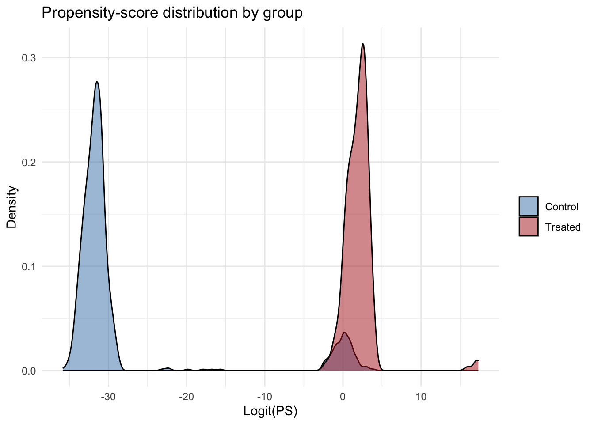
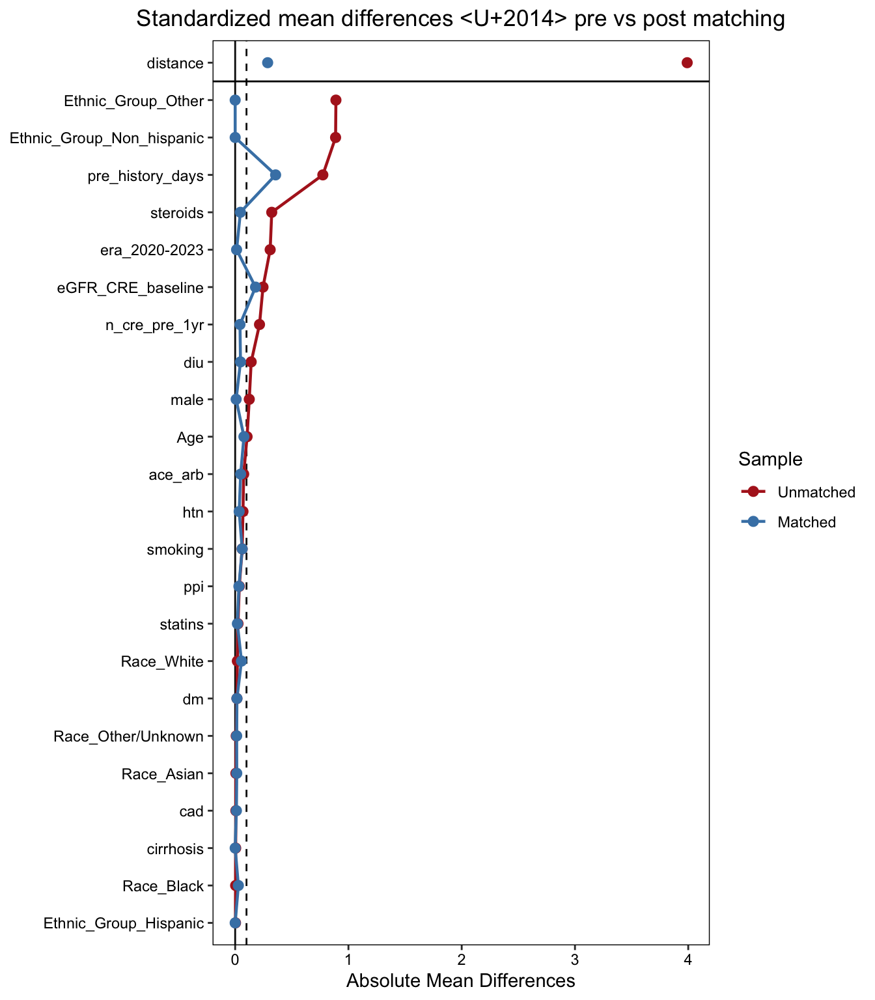

Code
suppressPackageStartupMessages({
library(readxl)
library(writexl)
library(dplyr)
library(tidyr)
library(MatchIt)
library(cobalt)
library(gtsummary)
library(ggplot2)
})Tianqi Ouyang
April 15, 2026
Treated (ICI, n=379) and control (non-ICI neoplasm, n=2,315) cohorts differ on demographics, calendar era, comorbidity profile, baseline kidney function, and — critically for outcome interpretation — baseline creatinine surveillance intensity (n_cre_pre_1yr). A direct comparison would confound the ICI effect with differential measurement, follow-up, and practice-era effects. Propensity-score matching is used to construct a comparable control subset while retaining all 379 treated patients.
| Parameter | Value |
|---|---|
| Matching algorithm | Nearest-neighbor PS matching (logit PS), greedy, no replacement |
| Ratio | Variable 1:k, min.controls = 1, max.controls = 3 |
| Caliper | 0.2 × SD(logit PS) |
| Exact-match stratum | era (2016–2019 / 2020–2023) |
| Eligibility filter | has_pre_cre == 1 |
| Seed | set.seed(42) |
| Software | R MatchIt 4.x |
| Balance target | Standardized mean difference (SMD) < 0.1 for all PS model covariates |
| Step | Control n |
|---|---|
| After cohort build (Control Group page) | 2,315 |
| Drop Index year ≤ 2015 (no treated counterpart) | −1,025 |
Drop has_pre_cre == 0 |
(computed below) |
| Eligible for matching | see chunk cohort-restrict |
| Choice | Reason |
|---|---|
| Drop pre-2016 controls | Treated cohort begins 2016; earlier controls have no temporal counterpart |
| Variable 1:k (max 3) | Keeps all 379 treated even in 2020–2023 where control pool is tighter; variance-reduction gains plateau after k≈4 (Rubin 1996) |
| Caliper 0.2 × SD(logit PS) | Austin (2011) — empirically optimal for bias removal |
| Exact-match on era only | Era shift is large/structural; sex balances adequately via PS alone |
Include n_cre_pre_1yr + pre_history_days in PS model |
Surveillance intensity is a study-specific candidate confounder; must be balanced explicitly |
Exclude Cancer_Diagnosis / Cancers_stage |
Control cohort lacks these fields (only treated has them) |
Exclude pre_median_HGB_90days, pre_median_ALB_90days, pre_median_GHBA1C_90days from PS model |
~77% missing in controls (routine pre-ICI oncology workup labs are rarely drawn in the control pool); presence would leak treatment status. Shown in Table 1 for transparency only |
Exclude post-exposure variables (last_cre_days, aki, outcomes) |
Would induce collider bias if included |
Before rendering this page, re-render treated_group.qmd and control_group.qmd so the new n_cre_pre_1yr, pre_history_days, has_pre_cre, cre_rate_pre, n_cre_post, cre_rate_post columns are present in the output .xlsx files.
Treated raw n = 379 Control raw n = 1307 Rename Race1 → Race in control so variable names match. Keep only columns needed for matching + downstream analysis.
control <- control %>% rename(Race = Race1)
# Columns needed for PS model + bookkeeping + downstream time-to-event
common_vars <- c(
"EMPI", "Index_date", "last_cre_days", "Age", "male", "Race", "Ethnic_Group",
"dm", "htn", "cad", "cirrhosis",
"ace_arb", "diu", "ppi", "steroids", "smoking", "statins",
"eGFR_CRE_baseline",
"pre_median_HGB_90days", "pre_median_ALB_90days", "pre_median_GHBA1C_90days",
"n_cre_pre_1yr", "pre_history_days", "has_pre_cre"
)
missing_t <- setdiff(common_vars, names(treated))
missing_c <- setdiff(common_vars, names(control))
if (length(missing_t) > 0) stop("Treated missing columns: ", paste(missing_t, collapse = ", "))
if (length(missing_c) > 0) stop("Control missing columns: ", paste(missing_c, collapse = ", "))
combined <- bind_rows(
treated %>% mutate(treat = 1L) %>% select(all_of(c(common_vars, "treat"))),
control %>% mutate(treat = 0L) %>% select(all_of(c(common_vars, "treat")))
)
cat("Combined n =", nrow(combined), "\n")Combined n = 1686 n0 <- nrow(combined)
# Drop controls with Index year <= 2015
combined <- combined %>%
mutate(index_year = as.numeric(format(as.Date(Index_date), "%Y"))) %>%
filter(!(treat == 0 & index_year <= 2015))
n1 <- nrow(combined)
# Eligibility: must have pre-index CRE surveillance
combined <- combined %>% filter(has_pre_cre == 1)
n2 <- nrow(combined)
# Era bins
combined <- combined %>%
mutate(era = factor(ifelse(index_year <= 2019, "2016-2019", "2020-2023")))
# Attrition
attrition <- tibble::tibble(
Step = c("Combined (treated + control)",
"Drop controls with Index year <= 2015",
"Drop has_pre_cre == 0"),
N = c(n0, n1, n2),
Dropped = c(NA, n0 - n1, n1 - n2)
)
knitr::kable(attrition)| Step | N | Dropped |
|---|---|---|
| Combined (treated + control) | 1686 | NA |
| Drop controls with Index year <= 2015 | 1686 | 0 |
| Drop has_pre_cre == 0 | 1249 | 437 |
By group x era:| treat | era | n |
|---|---|---|
| 0 | 2016-2019 | 777 |
| 0 | 2020-2023 | 192 |
| 1 | 2016-2019 | 138 |
| 1 | 2020-2023 | 142 |
pre_tbl <- combined %>%
select(treat, Age, male, Race, Ethnic_Group,
dm, htn, cad, cirrhosis,
ace_arb, diu, ppi, steroids, smoking, statins,
eGFR_CRE_baseline,
pre_median_HGB_90days, pre_median_ALB_90days, pre_median_GHBA1C_90days,
n_cre_pre_1yr, pre_history_days,
era) %>%
tbl_summary(
by = treat,
statistic = list(all_continuous() ~ "{median} ({p25}, {p75})"),
missing_text = "Missing"
) %>%
add_difference() %>%
modify_header(label ~ "**Variable**") %>%
bold_labels()
pre_tbl| Variable | 0 N = 9691 |
1 N = 2801 |
Difference2 | 95% CI2,3 | p-value2 |
|---|---|---|---|---|---|
| Age | 67 (60, 74) | 67 (58, 75) | 1.4 | -0.33, 3.2 | 0.11 |
| male | 485 (50%) | 175 (63%) | -12% | -19%, -5.7% | <0.001 |
| Race | |||||
| Asian | 1 (0.1%) | 2 (0.7%) | |||
| Black | 3 (0.3%) | 2 (0.7%) | |||
| Other/Unknown | 12 (1.2%) | 6 (2.1%) | |||
| White | 953 (98%) | 270 (96%) | |||
| Ethnic_Group | |||||
| Hispanic | 3 (0.3%) | 0 (0%) | |||
| Non_hispanic | 859 (89%) | 0 (0%) | |||
| Other | 107 (11%) | 280 (100%) | |||
| dm | 157 (16%) | 41 (15%) | 1.6% | -3.4%, 6.5% | 0.6 |
| htn | 669 (69%) | 174 (62%) | 6.9% | 0.28%, 14% | 0.036 |
| cad | 165 (17%) | 46 (16%) | 0.60% | -4.6%, 5.8% | 0.9 |
| cirrhosis | 8 (0.8%) | 1 (0.4%) | 0.47% | -0.66%, 1.6% | 0.7 |
| ace_arb | 412 (43%) | 98 (35%) | 7.5% | 0.89%, 14% | 0.029 |
| diu | 362 (37%) | 65 (23%) | 14% | 8.1%, 20% | <0.001 |
| ppi | 347 (36%) | 90 (32%) | 3.7% | -2.8%, 10% | 0.3 |
| steroids | 400 (41%) | 206 (74%) | -32% | -39%, -26% | <0.001 |
| smoking | 437 (45%) | 109 (39%) | 6.2% | -0.57%, 13% | 0.078 |
| statins | 474 (49%) | 130 (46%) | 2.5% | -4.4%, 9.4% | 0.5 |
| eGFR_CRE_baseline | 80 (67, 93) | 88 (72, 97) | -4.7 | -7.2, -2.2 | <0.001 |
| pre_median_HGB_90days | 13.80 (12.75, 14.80) | 13.90 (12.90, 14.68) | -0.07 | -0.28, 0.13 | 0.5 |
| Missing | 230 | 0 | |||
| pre_median_ALB_90days | 4.40 (4.20, 4.60) | 4.30 (4.10, 4.50) | 0.07 | 0.02, 0.11 | 0.008 |
| Missing | 315 | 3 | |||
| pre_median_GHBA1C_90days | NA (NA, NA) | 6.30 (6.00, 7.30) | |||
| Missing | 969 | 258 | |||
| n_cre_pre_1yr | 2.00 (1.00, 3.00) | 2.00 (1.00, 5.00) | -1.3 | -2.0, -0.50 | 0.001 |
| pre_history_days | 4,375 (1,628, 6,536) | 346 (46, 3,629) | 2,290 | 1,896, 2,685 | <0.001 |
| era | |||||
| 2016-2019 | 777 (80%) | 138 (49%) | |||
| 2020-2023 | 192 (20%) | 142 (51%) | |||
| 1 Median (Q1, Q3); n (%) | |||||
| 2 Welch Two Sample t-test; 2-sample test for equality of proportions with continuity correction | |||||
| 3 CI = Confidence Interval | |||||
Drop incomplete cases (PS model + MatchIt both require complete covariates).
ps_covars <- c("Age", "male", "Race", "Ethnic_Group",
"dm", "htn", "cad", "cirrhosis",
"ace_arb", "diu", "ppi", "steroids", "smoking", "statins",
"eGFR_CRE_baseline",
"n_cre_pre_1yr", "pre_history_days")
# HGB / ALB / HbA1c excluded from PS model: ~77% missing in controls
# (oncology-workup labs not routinely drawn in the control pool).
# Kept in Table 1 for descriptive comparison only.
n_before_cc <- nrow(combined)
combined_cc <- combined %>% drop_na(all_of(ps_covars))
n_after_cc <- nrow(combined_cc)
cat("Dropped", n_before_cc - n_after_cc,
"rows with missing PS covariates.",
n_after_cc, "remain.\n")Dropped 0 rows with missing PS covariates. 1249 remain.
Missingness per covariate (full combined):| var | n_missing |
|---|---|
| Age | 0 |
| male | 0 |
| Race | 0 |
| Ethnic_Group | 0 |
| dm | 0 |
| htn | 0 |
| cad | 0 |
| cirrhosis | 0 |
| ace_arb | 0 |
| diu | 0 |
| ppi | 0 |
| steroids | 0 |
| smoking | 0 |
| statins | 0 |
| eGFR_CRE_baseline | 0 |
| n_cre_pre_1yr | 0 |
| pre_history_days | 0 |
ps_formula <- as.formula(paste("treat ~", paste(ps_covars, collapse = " + ")))
ps_fit <- glm(ps_formula, data = combined_cc, family = binomial(link = "logit"))
combined_cc <- combined_cc %>%
mutate(ps = predict(ps_fit, type = "response"),
logit_ps = predict(ps_fit, type = "link"))
ggplot(combined_cc, aes(x = logit_ps, fill = factor(treat))) +
geom_density(alpha = 0.5) +
scale_fill_manual(values = c("0" = "steelblue", "1" = "firebrick"),
labels = c("Control", "Treated"),
name = "") +
labs(x = "Logit(PS)", y = "Density",
title = "Propensity-score distribution by group") +
theme_minimal()
Variable-ratio 1:k nearest-neighbor (k between 1 and 3), exact-matched on era, caliper 0.2 SD(logit PS).
Call:
matchit(formula = ps_formula, data = combined_cc, method = "nearest",
distance = "glm", link = "logit", exact = ~era, replace = FALSE,
caliper = 0.2, std.caliper = TRUE, ratio = 2, min.controls = 1,
max.controls = 3)
Summary of Balance for All Data:
Means Treated Means Control Std. Mean Diff. Var. Ratio
distance 0.8058 0.0561 3.9908 1.1020
Age 65.1679 66.6006 -0.1051 1.3355
male 0.6250 0.5005 0.2571 .
RaceAsian 0.0071 0.0010 0.0726 .
RaceBlack 0.0071 0.0031 0.0481 .
RaceOther/Unknown 0.0214 0.0124 0.0625 .
RaceWhite 0.9643 0.9835 -0.1035 .
Ethnic_GroupHispanic 0.0000 0.0031 -0.0633 .
Ethnic_GroupNon_hispanic 0.0000 0.8865 -3.1726 .
Ethnic_GroupOther 1.0000 0.1104 16247872.1022 .
dm 0.1464 0.1620 -0.0441 .
htn 0.6214 0.6904 -0.1422 .
cad 0.1643 0.1703 -0.0162 .
cirrhosis 0.0036 0.0083 -0.0785 .
ace_arb 0.3500 0.4252 -0.1576 .
diu 0.2321 0.3736 -0.3350 .
ppi 0.3214 0.3581 -0.0785 .
steroids 0.7357 0.4128 0.7323 .
smoking 0.3893 0.4510 -0.1265 .
statins 0.4643 0.4892 -0.0499 .
eGFR_CRE_baseline 83.5873 78.8833 0.2458 1.0989
n_cre_pre_1yr 4.0964 2.8421 0.2148 1.3140
pre_history_days 2086.2643 4376.7234 -0.7739 0.9950
era2016-2019 0.4929 0.8019 -0.6181 .
era2020-2023 0.5071 0.1981 0.6181 .
eCDF Mean eCDF Max
distance 0.6071 0.8974
Age 0.0231 0.0676
male 0.1245 0.1245
RaceAsian 0.0061 0.0061
RaceBlack 0.0040 0.0040
RaceOther/Unknown 0.0090 0.0090
RaceWhite 0.0192 0.0192
Ethnic_GroupHispanic 0.0031 0.0031
Ethnic_GroupNon_hispanic 0.8865 0.8865
Ethnic_GroupOther 0.8896 0.8896
dm 0.0156 0.0156
htn 0.0690 0.0690
cad 0.0060 0.0060
cirrhosis 0.0047 0.0047
ace_arb 0.0752 0.0752
diu 0.1414 0.1414
ppi 0.0367 0.0367
steroids 0.3229 0.3229
smoking 0.0617 0.0617
statins 0.0249 0.0249
eGFR_CRE_baseline 0.0759 0.1396
n_cre_pre_1yr 0.0386 0.1485
pre_history_days 0.2425 0.4069
era2016-2019 0.3090 0.3090
era2020-2023 0.3090 0.3090
Summary of Balance for Matched Data:
Means Treated Means Control Std. Mean Diff. Var. Ratio
distance 0.6691 0.6153 0.2868 1.1520
Age 65.5070 66.5595 -0.0772 1.0103
male 0.5352 0.5266 0.0178 .
RaceAsian 0.0141 0.0000 0.1672 .
RaceBlack 0.0282 0.0000 0.3345 .
RaceOther/Unknown 0.0704 0.0571 0.0919 .
RaceWhite 0.8873 0.9429 -0.2994 .
Ethnic_GroupHispanic 0.0000 0.0000 0.0000 .
Ethnic_GroupNon_hispanic 0.0000 0.0000 0.0000 .
Ethnic_GroupOther 1.0000 1.0000 0.0000 .
dm 0.1268 0.1424 -0.0443 .
htn 0.6761 0.6408 0.0726 .
cad 0.1549 0.1440 0.0296 .
cirrhosis 0.0141 0.0141 -0.0000 .
ace_arb 0.3662 0.4147 -0.1017 .
diu 0.2817 0.3286 -0.1112 .
ppi 0.3099 0.3427 -0.0704 .
steroids 0.4789 0.5250 -0.1047 .
smoking 0.4789 0.4171 0.1268 .
statins 0.5070 0.5266 -0.0392 .
eGFR_CRE_baseline 81.6193 78.1780 0.1798 1.1929
n_cre_pre_1yr 4.1268 3.8787 0.0425 0.3548
pre_history_days 3010.0563 4066.5485 -0.3570 1.3180
era2016-2019 0.7606 0.7731 -0.0250 .
era2020-2023 0.2394 0.2269 0.0250 .
eCDF Mean eCDF Max Std. Pair Dist.
distance 0.0630 0.1964 0.8465
Age 0.0310 0.0908 1.1298
male 0.0086 0.0086 0.8450
RaceAsian 0.0141 0.0141 0.1349
RaceBlack 0.0282 0.0282 2.5638
RaceOther/Unknown 0.0133 0.0133 0.6278
RaceWhite 0.0556 0.0556 1.5921
Ethnic_GroupHispanic 0.0000 0.0000 0.0000
Ethnic_GroupNon_hispanic 0.0000 0.0000 0.0000
Ethnic_GroupOther 0.0000 0.0000 0.0000
dm 0.0156 0.0156 0.6107
htn 0.0352 0.0352 1.1011
cad 0.0110 0.0110 0.9814
cirrhosis 0.0000 0.0000 0.0227
ace_arb 0.0485 0.0485 1.0006
diu 0.0469 0.0469 1.2381
ppi 0.0329 0.0329 1.0219
steroids 0.0462 0.0462 1.1597
smoking 0.0618 0.0618 1.1653
statins 0.0196 0.0196 1.1165
eGFR_CRE_baseline 0.0465 0.1354 1.1924
n_cre_pre_1yr 0.0371 0.1917 1.2710
pre_history_days 0.1232 0.2527 1.2382
era2016-2019 0.0125 0.0125 0.3637
era2020-2023 0.0125 0.0125 0.3637
Sample Sizes:
Control Treated
All 969. 280
Matched (ESS) 71.96 71
Matched 88. 71
Unmatched 881. 209
Discarded 0. 0Matched treated n = 71 Matched control n = 88 Unmatched treated n = 209 post_tbl <- matched_data %>%
select(treat, Age, male, Race, Ethnic_Group,
dm, htn, cad, cirrhosis,
ace_arb, diu, ppi, steroids, smoking, statins,
eGFR_CRE_baseline,
pre_median_HGB_90days, pre_median_ALB_90days, pre_median_GHBA1C_90days,
n_cre_pre_1yr, pre_history_days,
era) %>%
tbl_summary(
by = treat,
statistic = list(all_continuous() ~ "{median} ({p25}, {p75})"),
missing_text = "Missing"
) %>%
add_difference() %>%
modify_header(label ~ "**Variable**") %>%
bold_labels()
post_tbl| Variable | 0 N = 881 |
1 N = 711 |
Difference2 | 95% CI2,3 | p-value2 |
|---|---|---|---|---|---|
| Age | 67 (61, 74) | 68 (58, 75) | 0.70 | -3.5, 4.9 | 0.7 |
| male | 44 (50%) | 38 (54%) | -3.5% | -20%, 13% | 0.8 |
| Race | |||||
| Asian | 0 (0%) | 1 (1.4%) | |||
| Black | 0 (0%) | 2 (2.8%) | |||
| Other/Unknown | 5 (5.7%) | 5 (7.0%) | |||
| White | 83 (94%) | 63 (89%) | |||
| Ethnic_Group | |||||
| Other | 88 (100%) | 71 (100%) | |||
| dm | 12 (14%) | 9 (13%) | 0.96% | -11%, 12% | >0.9 |
| htn | 54 (61%) | 48 (68%) | -6.2% | -22%, 9.9% | 0.5 |
| cad | 14 (16%) | 11 (15%) | 0.42% | -11%, 12% | >0.9 |
| cirrhosis | 1 (1.1%) | 1 (1.4%) | -0.27% | -4.1%, 3.5% | >0.9 |
| ace_arb | 37 (42%) | 26 (37%) | 5.4% | -11%, 22% | 0.6 |
| diu | 29 (33%) | 20 (28%) | 4.8% | -11%, 20% | 0.6 |
| ppi | 30 (34%) | 22 (31%) | 3.1% | -13%, 19% | 0.8 |
| steroids | 42 (48%) | 34 (48%) | -0.16% | -16%, 16% | >0.9 |
| smoking | 40 (45%) | 34 (48%) | -2.4% | -19%, 14% | 0.9 |
| statins | 44 (50%) | 36 (51%) | -0.70% | -17%, 16% | >0.9 |
| eGFR_CRE_baseline | 78 (69, 95) | 81 (72, 97) | -2.9 | -9.5, 3.6 | 0.4 |
| pre_median_HGB_90days | 13.50 (12.60, 14.40) | 13.45 (12.50, 14.35) | -0.02 | -0.57, 0.53 | >0.9 |
| Missing | 25 | 0 | |||
| pre_median_ALB_90days | 4.40 (4.10, 4.50) | 4.25 (4.10, 4.40) | 0.12 | 0.01, 0.22 | 0.029 |
| Missing | 19 | 1 | |||
| pre_median_GHBA1C_90days | |||||
| 5.6 | 0 (NA%) | 1 (20%) | |||
| 5.9 | 0 (NA%) | 1 (20%) | |||
| 6 | 0 (NA%) | 2 (40%) | |||
| 7.3 | 0 (NA%) | 1 (20%) | |||
| Missing | 88 | 66 | |||
| n_cre_pre_1yr | 2.0 (1.0, 3.0) | 2.0 (1.0, 5.0) | -0.54 | -2.8, 1.7 | 0.6 |
| pre_history_days | 4,110 (1,723, 6,494) | 1,403 (60, 5,170) | 1,265 | 269, 2,262 | 0.013 |
| era | |||||
| 2016-2019 | 70 (80%) | 54 (76%) | |||
| 2020-2023 | 18 (20%) | 17 (24%) | |||
| 1 Median (Q1, Q3); n (%) | |||||
| 2 Welch Two Sample t-test; 2-sample test for equality of proportions with continuity correction | |||||
| 3 CI = Confidence Interval | |||||

Saved matched_cohort.xlsx with 159 rows and 32 columns.male in §7; if >0.1, add exact = ~ era + male.ghba1c_missing) and mean-imputing, rather than dropping.last_cre_days, aki, any *_Xyear outcome) are excluded from the PS model to avoid collider / post-treatment bias.subclass, or (b) use weights from match.data() in a weighted outcome model.